Contents
- Given Design Parameters %%
- Calculating Realistic Specs %%
- Calculating Kaiser Parameters %%
- Construct Kaiser Window
- Construct Impulse Response of the Ideal Filter
- Causal Impulse Response of the Filter
- Magnitude response of the digital filter & Passbands zoomed in
- Input Siganl
- Expected Signal in the Freq domain
%%Author : R.U. Hettiarachchi %% %%Index : 170221T %%
Given Design Parameters %%
A_p_tilde = 0.05; %Max Passband Ripple A_a_tilde = 47; %Min stopband attenuation Omega_p1 = 500; Omega_p2 = 1050; Omega_a1 = 600; Omega_a2 = 900; Omega_s = 2800; T = 2*pi/Omega_s;
Calculating Realistic Specs %%
B_t1 = Omega_a1 - Omega_p1; B_t2 = Omega_p2 - Omega_a2; B_t = min(B_t1,B_t2) Omega_c1 = Omega_p1 + B_t/2 Omega_c2 = Omega_p2 - B_t/2
B_t =
100
Omega_c1 =
550
Omega_c2 =
1000
Calculating Kaiser Parameters %%
delta_p_tilde = (10^(0.05*A_p_tilde)-1)/(10^(0.05*A_p_tilde)+1) delta_a_tilde = 10^(-0.05*A_a_tilde) delta = min(delta_p_tilde,delta_a_tilde) A_a = -20*log10(delta) %Actual Stopband Loss A_p = 20*log10((1+delta)/(1-delta)) %Actual Passband Ripple % -> Find alpha alpha = 0; if (A_a >21 && A_a <= 50) alpha = 0.5842*(A_a-21)^0.4 + 0.07886*(A_a-21); else alpha = 0.1102*(A_a-8.7); end % -> Find D D = 0.9222; if(A_a > 21) D = (A_a - 7.95)/14.36; end % -> Find N N = (Omega_s*D)/B_t+1; N = ceil(N) + mod(ceil(N)-1,2) %smallest odd integer satisfying the inequality
delta_p_tilde =
0.0029
delta_a_tilde =
0.0045
delta =
0.0029
A_a =
50.8175
A_p =
0.0500
N =
85
Construct Kaiser Window
n = -(N-1)/2 : 1 : (N-1)/2; w = my_kaiser(N,alpha); figure; stem(n,w); xlabel('n'); ylabel('w[n]'); axis([-(N-1)/2 (N-1)/2 0 1 ]) title('Window Function'); grid on; saveas(gcf,'window','epsc')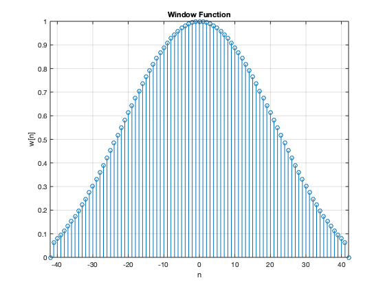
Construct Impulse Response of the Ideal Filter
h = (1./(n*pi)).*(sin(Omega_c1*n*T) - sin(Omega_c2*n*T));
h((N-1)/2+1) = 1 + (2/Omega_s)*(Omega_c1 - Omega_c2) ;
n = 0 : (N-1); %shifting by (N-1)/2
Causal Impulse Response of the Filter
close all; h_w = h.*w.'; figure; stem(n,h_w); xlabel('nT'); ylabel('h_w[n]'); axis([0 (N-1) -0.15 0.75 ]) title('Causal Impulse Response'); grid on; saveas(gcf,'cir','epsc')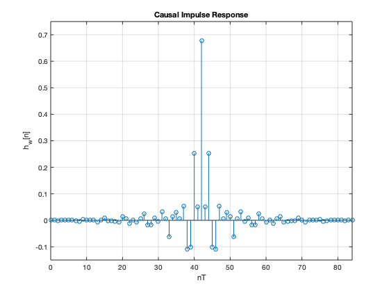
Magnitude response of the digital filter & Passbands zoomed in
freqz(h_w); [z,w] = freqz(h_w); w = w./T; figure; plot(w,20*log10(abs(z))) grid on; axis([0 1400 20*log10(0) 20*log10(1.1) ]) xlabel('Frequency rad/s'); ylabel('Magnitude (dB)'); title('Magnitude response of the digital filter'); saveas(gcf,'magnitude response of filter','epsc') figure; plot(w,20*log10(abs(z))) grid on; axis([200 550 20*log10(0.98) 20*log10(1.005) ]) xlabel('Frequency rad/s'); ylabel('Magnitude (dB)'); title('Magnitude response - Lower Passband'); saveas(gcf,'upper passband','epsc') figure; plot(w,20*log10(abs(z))) grid on; axis([1000 1400 20*log10(0.98) 20*log10(1.005) ]) xlabel('Frequency rad/s'); ylabel('Magnitude (dB)'); title('Magnitude response - Upper Passband'); saveas(gcf,'lower passband','epsc')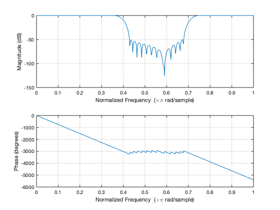 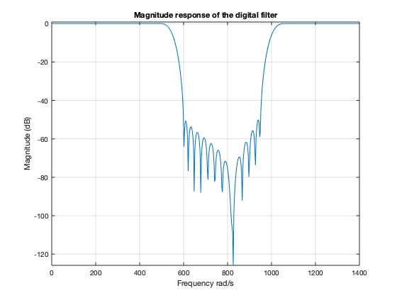 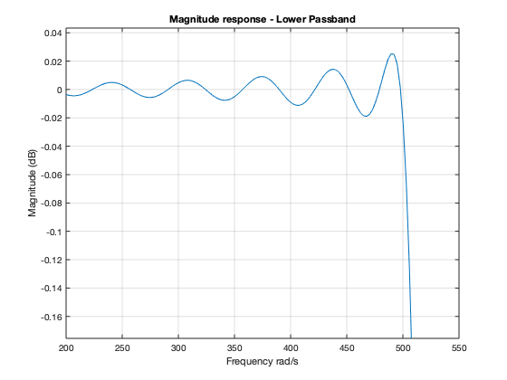 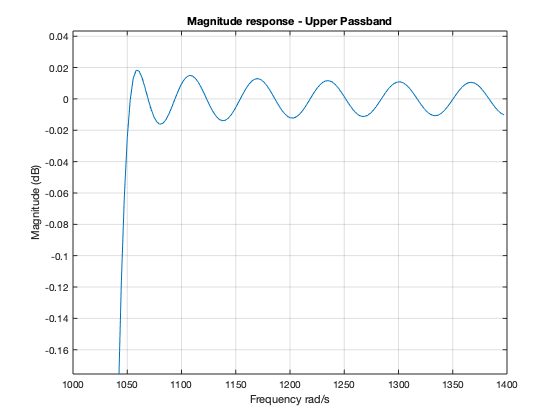
Input Siganl
Freq components,
Omega1 = Omega_c1/2; Omega2 = Omega_c1 + (Omega_c2-Omega_c1)/2; Omega3 = Omega_c2 + (Omega_s/2-Omega_c2)/2; % Generate the Input signal samples = 300; % Enough to achieve a steady-state response. n1 = 0:1:samples; n2 = 0:0.1:samples; x = cos(Omega1.*n1*T) + cos(Omega2.*n1*T) + cos(Omega3.*n1*T); X_env = cos(Omega1.*n2*T) + cos(Omega2.*n2*T) + cos(Omega3.*n2*T); R = cos(Omega1.*n1*T) + cos(Omega3.*n1*T); stem(n1(1:100),x(1:100)) xlabel('n') ylabel('Amplitude') title(strcat(['Input signal x[n]',' ','- Time Domain'])); hold on plot(n2(1:1000),X_env(1:1000),'-.') legend('Input signal','Input Signal Continous Time Shape'); figure; L = length(x); NFFT = 2^nextpow2(L); % Next power of 2 from length of y Y = fft(x,NFFT)/L; f = Omega_s/(2)*linspace(0,1,NFFT/2+1); % Plot single-sided amplitude spectrum. plot(f,2*abs(Y(1:NFFT/2+1))) title('Single-Sided Amplitude Spectrum of x(nT)') xlabel('Frequency (rad/s)') ylabel('|X(w)|') saveas(gcf,'Xw','epsc') figure L=1400; X = fft(x,L); H_w = fft(h_w,L); filtered = ifft(X.*H_w); stem(filtered(1:100)); grid on; title('Filtered Input Signal x(nT)') saveas(gcf,'Xw','epsc') figure plot(filtered(42:42+85)) hold on out = conv(h_w,x,'same'); %% 'same' is there to crop the filtered signal plot(out(4:85)) title('Filtered Input Signal Using conv()') figure; L = length(out); NFFT = 2^nextpow2(L); % Next power of 2 from length of y Y = fft(out,NFFT)/L; f = Omega_s/(2)*linspace(0,1,NFFT/2+1); plot(f,2*abs(Y(1:NFFT/2+1))) % Plot single-sided amplitude spectrum. title('Single-Sided Amplitude Spectrum of the Filtered Signal') xlabel('Frequency (rad/s)') ylabel('|Y(f)|')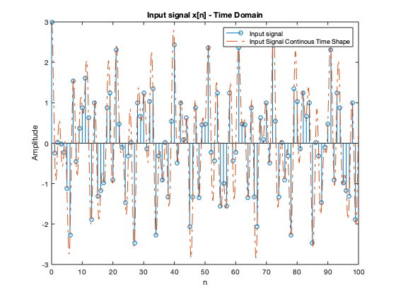 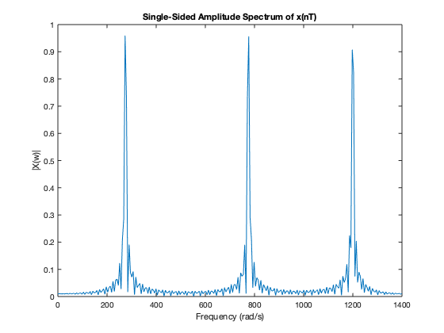 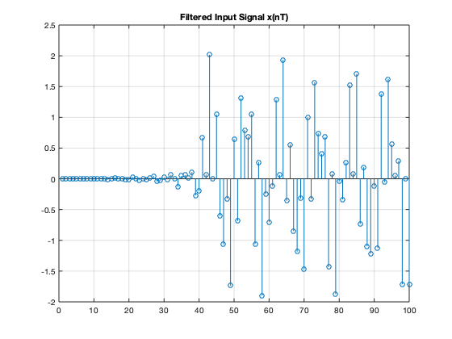 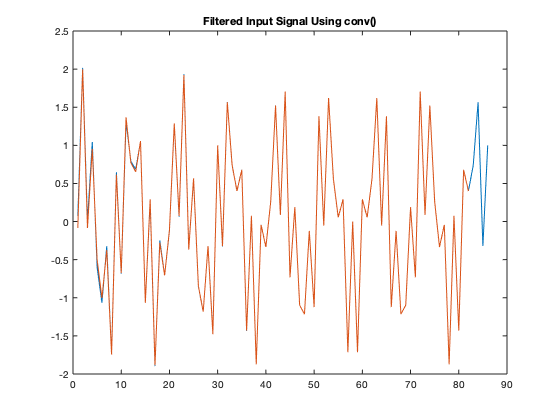 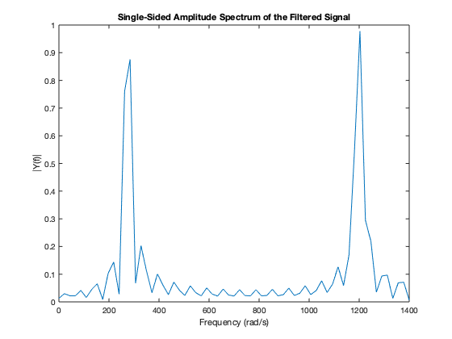
Expected Signal in the Freq domain
figure; L = length(R); NFFT = 2^nextpow2(L); % Next power of 2 from length of y Y = fft(R,NFFT)/L; f = Omega_s/(2)*linspace(0,1,NFFT/2+1); plot(f,2*abs(Y(1:NFFT/2+1))) % Plot single-sided amplitude spectrum. title('Single-Sided Amplitude Spectrum of the Expected Filtered Signal') xlabel('Frequency (rad/s)') ylabel('|Y(f)|') saveas(gcf,'efs','epsc')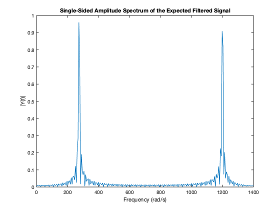